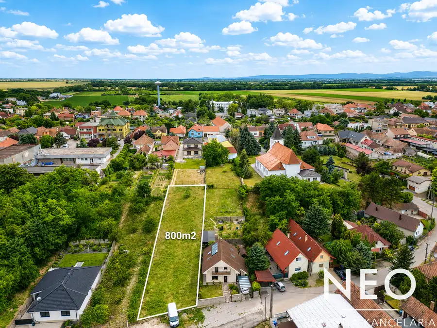
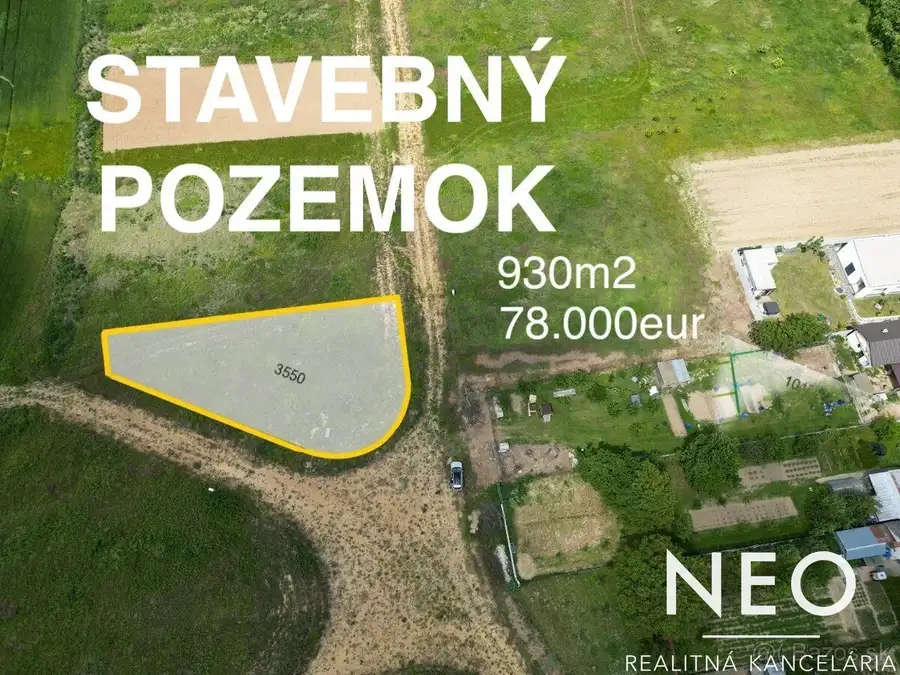
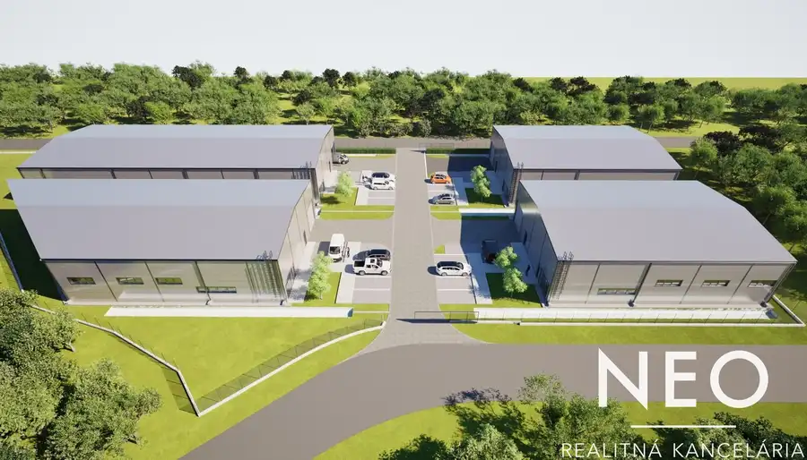

Neo - Trnava - úplne nová výrobná/skladová hala - prenájom / predaj
Trnava
- Plocha5950 m²
- StavNovostavba
- Energetická triedaA
O nehnuteľnosti
Na prenájom úplne nová výrobná, alebo skladová hala – Automobilová ulica, TrnavaCelková výmera haly je takmer 6 000 m² s možnosťou flexibilného rozdelenia na menšie segmenty podľa potrieb nájomcu.Hala je zateplená a disponuje kompletnými inžinierskymi sieťami – voda, elektrina a odpad.3 elektrické brány - umožňujú pohodlný vjazd kamiónov priamo do haly.Súčasťou areálu je:vrátnicaoplotený pozemokspevnené parkovisko o výmere 3 100 m² s možnosťou otáčania kamiónovprotipožiarna ochrana s dízlovou pumpouVýhodou je výborná dostupnosť – priame napojenie na diaľnicu smer Bratislava, Nitra a Trenčín.Cena nájmu haly: 6,50 eur/ m2 bez DPHV prípade záujmu, alebo otázok ma neváhajte kontaktovať.Petra Šarmírová | 0903 250 311 | sarmirova@neoreal.sk
Parametre
| Druh | Skladový objekt |
|---|---|
| Dátum zverejnenia | 4. 6. 2026 |
| Elektrina | Na pozemku - 230 V |
| Energetický certifikát budovy | A |
| Odpadové vody | Na pozemku - Kanalizácia |
| Plyn | Nedostupné |
| Počet nadzemných podlaží | 1 |
| Rok výstavby | 2026 |
| Stav nehnuteľnosti | Novostavba |
| Typ | Prenájom |
| Typ konštrukcie | Montovaná |
| Voda | Na pozemku - Diaľkový vodovod |
| Zastavaná plocha | 5950 m² |
| Úžitková plocha | 5950 m² |
Kde to je


Mohlo by Vás zaujímať

PozemokNové5 140 000 €NEO - MAJCICHOV - stavebný pozemok Majcichov 800 m² Na predaj stavebný pozemok v obci MajcichovPonúkame na predaj stavebný pozemok o výmere 800 m² v obci Majcichov, len 11 km od Trnavy.Parametre…
PozemokNové6 78 000 €NEO - HORNÁ KRUPÁ- stavebný pozemok na predaj Horná Krupá 930 m² Stavebný pozemok na predaj – Horná KrupáHľadáte rovinatý pozemok na stavbu rodinného domu v pokojnej lokalite s dobrou dostupnosťou do mesta?…
Komerčné priestoryNové5 Cena dohodouNeo - nová hala na prenájom – Zavar ( pri STK) 537 m² Zavar 537 m² Moderná novostavba - VÝRONÁ / SKLADOVÁ HALA v strategickej lokalite pri Trnave!Ponúkame na prenájom novú halu s celkovou výmerou 537 m² vrátane…